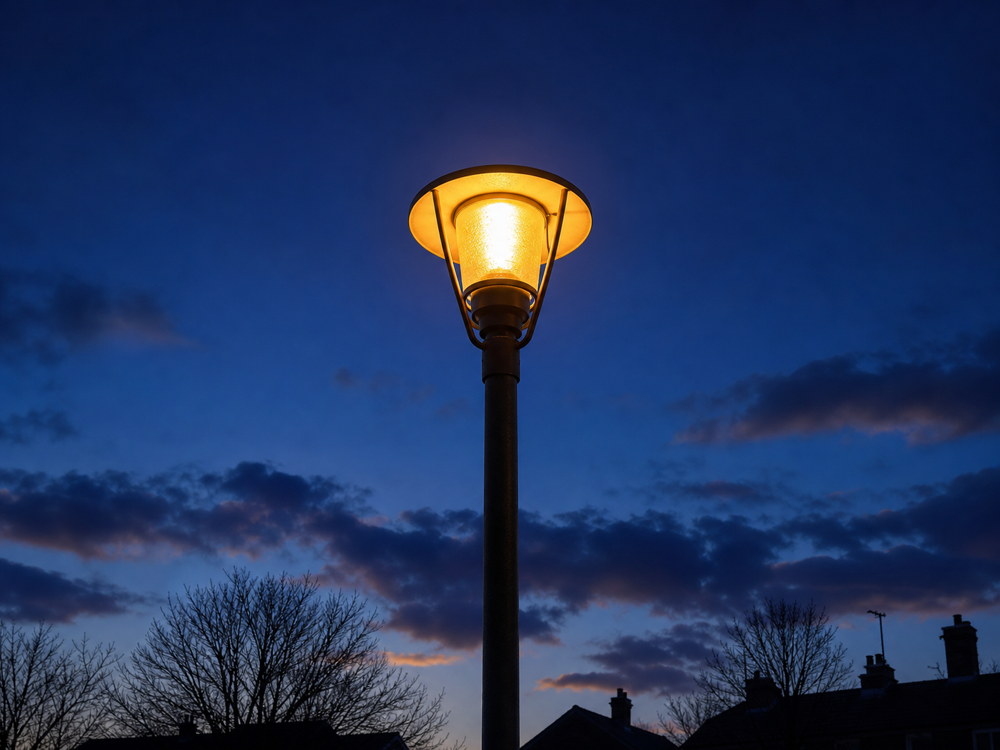
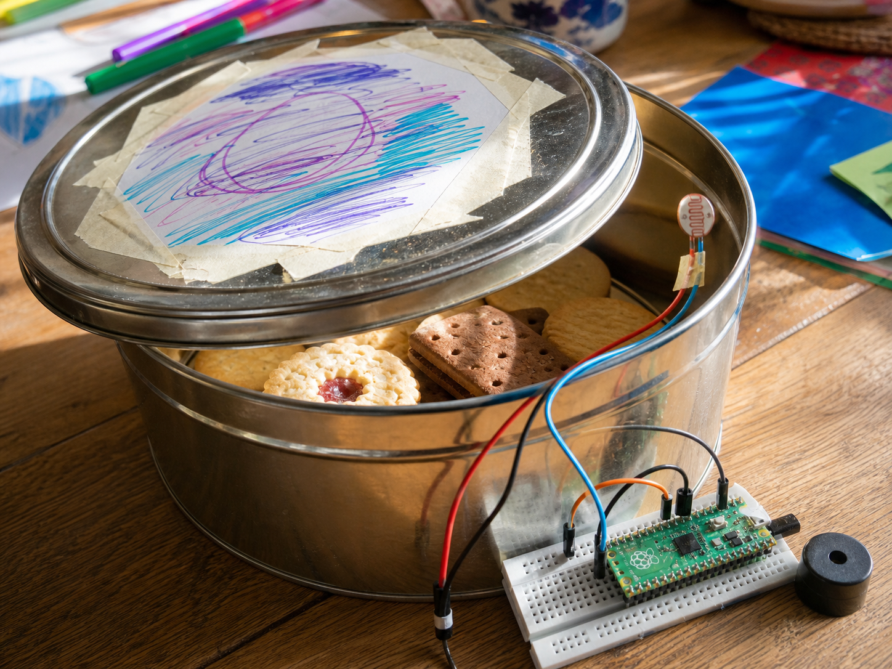
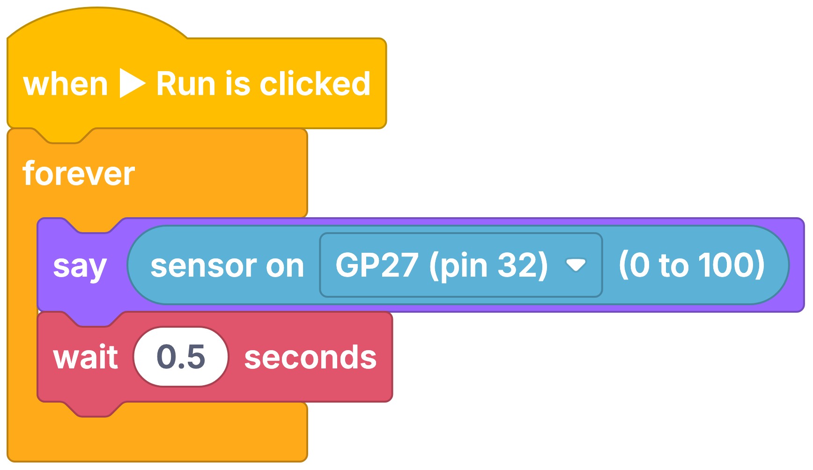

Street light
DetectHow dark it is
DecideIs it darker than dusk?
DoSwitch the lamp on
An LDR is a sensor that measures how bright or dark it is.
LDR stands for light-dependent resistor. Light shining on it lets electricity through more easily, so your code can tell light from dark.
Your projects can use it to react when a lamp comes on, when night falls, or when a shadow passes over.


